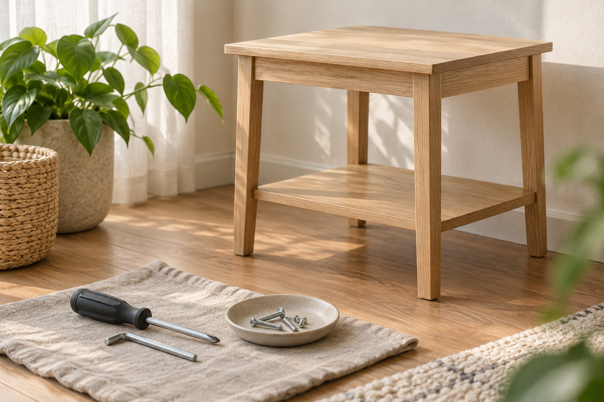

TYPE 01図解と準備の例
家具1点の組立
ベッドなど、家具1点の組立についての掲載があります。
掲載中の目安・要確認3,000円
相談準備の例
- 家具の商品名・型番
- 商品ページや説明書の有無
- 組立前か、途中まで組み立てた状態か
掲載地域 / 福岡県北九州市小倉北区
家具の種類から、
掲載の目安と相談準備を。
ベッドなどの家具の組立を相談したい方へ。
料金の目安と、事前に整理しておきたい情報を
見られる案内ページの提案です。

1点 / 大型 / 一式
補修の案内は別の項目で確認できます。01 / FURNITURE TYPES
種類を選ぶと、図解・料金目安・準備例が変わります。
分類と準備項目は制作側の提案です。
ベッドなど、家具1点の組立についての掲載があります。
システムベッドや学習机一式が、掲載例として挙げられています。
家具一式の料金目安も掲載されています。含まれる家具や点数は事前の確認が必要です。
プロフィールでは、住宅の傷や家具のリペアについても案内されています。
補修できる素材・状態・仕上がりは、掲載情報だけでは判断できません。
説明用のオリジナル図解です。実際の施工事例・商品写真ではありません。
掲載料金は現在の確定料金ではありません。税の扱い・出張費・追加費用・対応可否は要確認です。
表示切替だけのデモです。情報の入力・保存・送信はありません。02 / PUBLISHED GUIDE PRICES
公開投稿の「金額目安」を整理しました。
このサンプルで料金を確約するものではありません。
ベッドなど
3,000円システムベッドなど・学習机一式
5,000円含まれる内容・点数は要確認
15,000円税込・税別の区分、出張費、部品代などの追加費用、作業時間は掲載情報では確認できていません。家具の内容とあわせて、依頼前に確認が必要です。
03 / PREPARATION NOTES
問い合わせを具体的にするための提案です。
安部様が定めた必須項目や、受付手順ではありません。
組立か補修か。家具の種類や点数、気になる箇所を整理します。
商品名・型番、組立途中かどうか、補修なら傷の状態など、分かる範囲で。
相談する地域と時期を整理します。対応地域・日程は個別の確認が必要です。
写真を用意する場合は、住所が読める書類や人の顔など、相談に不要な情報の写り込みにご注意ください。このページにアップロード機能はありません。
04 / PUBLISHED INFORMATION
家具組立の投稿と、住宅の傷・家具のリペアに関するプロフィールをもとに構成しています。
掲載地域は福岡県北九州市小倉北区です。出張可能な地域、受付時間、日程は、このサンプルでは確定していません。
jmty.jp/fukuoka/ser-con/article-1qgzt4
jmty.jp/profiles/62502c0935881c6a3306131e
このページは、ご案内の見せ方を試すサンプルです。
家具の種類へ戻る